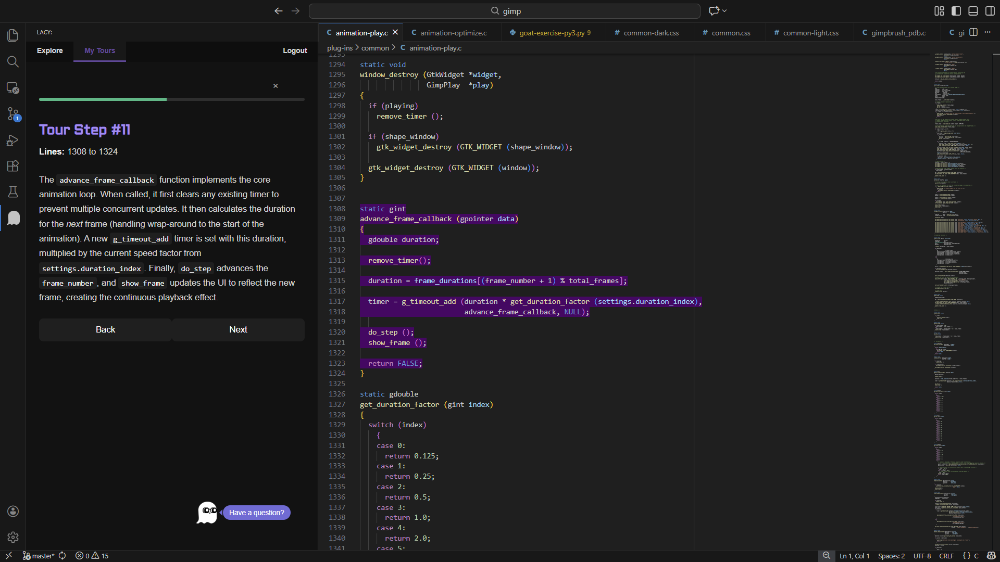
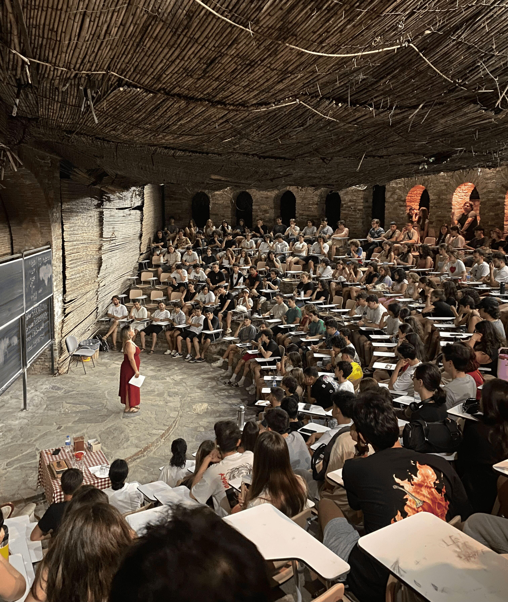
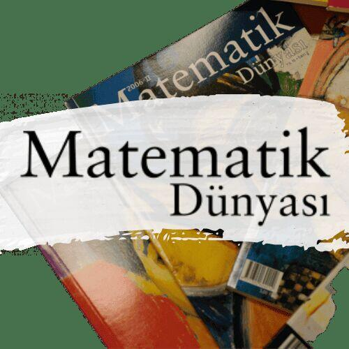
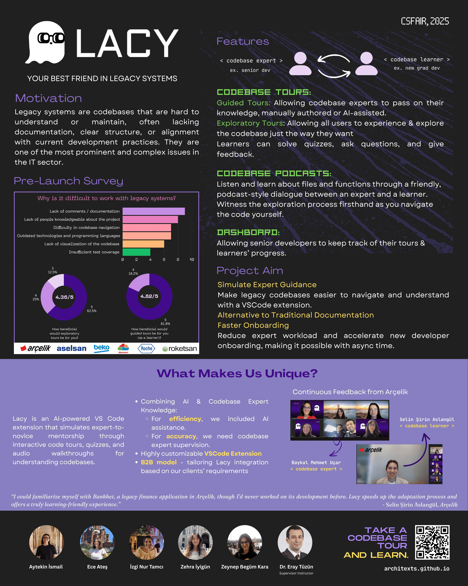

Research @ Intelligent User Interfaces Lab, Koç University
MSc student with KU Graduate Fellowship, (tuition + stipend + waiver). Conducting research under Prof. Metin Sezgin on creativity, machine learning, and sketch-based interfaces.
MSc student with KU Graduate Fellowship, (tuition + stipend + waiver). Conducting research under Prof. Metin Sezgin on creativity, machine learning, and sketch-based interfaces.
Do the sketch datasets capture how people actually sketch, or only what is easier to collect? Sketching is a natural way of expressing, processing, and communicating ideas — but as data needs for intelligent systems grow, sketch collection has often shifted toward what is easy to collect rather than what is ecologically valid.
In this paper, we argue that sketch datasets are systematically shaped by their collection protocols and experimental conditions, and therefore should be reported transparently and interpreted in light of the conditions that produced them.
We structure this discussion around six contextual factors — time, tools, background, audience, multimodality, and elicitation. Through these factors, we analyze 86 sketch datasets from 2002–2025, suggest practices for collecting sketch data that better reflect the diversity of human sketching, and include sketches from our exploratory study to show how different collection conditions can lead to very different kinds of sketches.
Onboarding new developers into legacy codebases is one of the most time-consuming responsibilities in software organizations, often relying on senior developers to provide one-on-one mentorship that does not scale. LACY, developed in collaboration with Beko, is a hybrid human–AI VS Code extension that captures expert mentoring as reusable code tours. The system combines AI-generated explanations with expert curation, integrating interactive walkthroughs, contextual quizzes, and narrated podcasts so that expert knowledge can be authored once and transferred across an organization asynchronously.

Individual Research under supervision of Prof. H. Altay Guvenir I designed a Directed MCQ (DMCQ) system to evaluate how Large Language Models like Gemini perform under human-informed guidance. The study simulates collaborative test-solving scenarios, where human cues and AI analysis jointly contribute to the elimination of options. The goal is to understand how such directed interaction influences model reasoning and accuracy in structured evaluation settings.
Mathematics has always been a shared space for curiosity. Over the years, I’ve taken part in several math communities in Turkey, contributing as a student, volunteer, and organizer — supporting both learning and outreach efforts.

I first arrived as a student, spending long summer days studying, thinking, and daydreaming under the trees. Over time, I also became a volunteer — helping in the library and kitchen so the village could keep running for students to learn, grow, and discover who they are. It’s a place where I met some of the most inspiring and important people in my life.
Visit site →
Served as board member and head of public relations; built the club’s identity and communication network. Together, we organized academic and popular events to promote mathematical culture, both online and face-to-face.
Visit site →
Helped digitize and preserve old issues of Matematik Dünyası, contributing to the journal’s online archive and continuity of mathematical culture in Turkiye.
Visit site →This project aims to generate computer music by transforming input text, specifically its rhythmic and harmonic aspects, into synthesized instrument sounds. The core idea is to correlate language and music by analyzing language syntax through rhythm and phonetics through harmony and sound combinations. The project creates two-channel music, with one channel producing drum sounds from individual letters (vowels, consonants, spaces) and the other generating piano chords from grouped syllables, offering an experimental exploration of how diverse texts translate into musical compositions using computers , drawing inspiration from historical rhythmic structures such as the dactylic hexameter of the Iliad and Arabic prosody (Aruz ölçüsü).

 ×
×
 ×
×
 ×
×